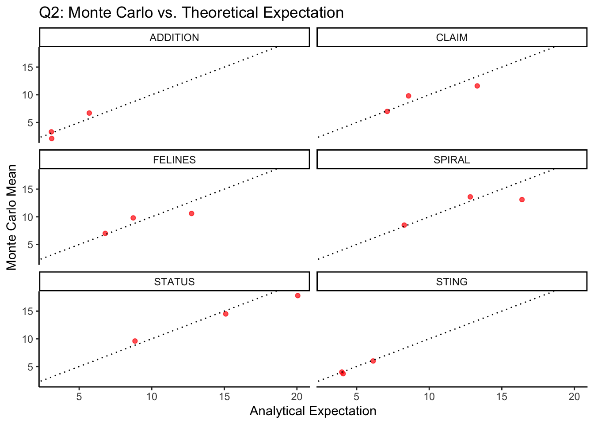

# ==============================
# LOAD SIMULATION AND AUX FILES
# ==============================
# Define which simulation file to use (A or B)
# You can switch the file name here as needed
input_file <- here("data_input", "SimulacionA_test.RDS") # or "SimulacionB_test.RDS"
# Additional inputs: list of true probabilities and selection reference
input_lst_mt <- here("data_input", "listMiCPN120.RDS")
input_df_selection <- here("data_input", "dfSelecion.RDS")
# Load simulation dataframe
df <- readRDS(input_file)
df$Concepto <- toupper(df$Concepto)
# Load list of individual-level true probabilities
listMtI <- readRDS(input_lst_mt)
names(listMtI) <- toupper(names(listMtI))
# Load population richness estimates
df_selecion <- readRDS(input_df_selection)
df_selecion$Concepto <- toupper(df_selecion$Concepto)
df_selecion <- df_selecion[ , -3] # Drop 3rd column
names(df_selecion)[2] <- "Spob" # Rename column to Spob
# Merge observed and population richness
df <- left_join(df, df_selecion, by = "Concepto")
# Rename estimation columns for clarity
df <- df %>%
rename(
Sobs = S0,
Schao2 = Shat,
Schao2BC = Shat_BC
) %>%
mutate(
Metodo = ifelse(grepl("A", input_file), "A", "B"), # Identify simulation method
Concepto = factor(Concepto, levels = df_selecion$Concepto)
)
# Set color palette for consistent plots
vColores <- brewer.pal(n = 4, name = "Set1")Semantic Richness Estimation Report - CPN120
Analysis
This Quarto template is designed to handle simulation outputs from both methods (A and B). You can toggle between datasets by adjusting the input_file path in the first code chunk. Visualization and statistical evaluation should be implemented as additional modular sections following this pattern.
Due to the computational cost of running full simulations, this repository includes test datasets to illustrate the analysis pipeline. If you wish to conduct the full simulations yourself, you must execute the simulation scripts (01-simulate_methodA.R and 02-simulate-mehodB.R) and load the resulting files into your local results/ directory.
Load and Prepare Data
Define Helper Functions
In this R chunk, we define functions that will support subsequent analyses. The function fcompute_expectation_qk allows us to compute the analytical expectation of the Q₁ to Qₖ values (see Chao et al., 2017).
source("fEstimadores/fEsperanzaQ_k.R")
# Compute theoretical and empirical expectations for Q_k
fcompute_expectation_qk <- function(df, listMtI, k = 1) {
df_summary <- df %>%
group_by(nT, Concepto) %>%
summarise(
MC_mean = mean(!!sym(paste0("Q", k)), na.rm = TRUE),
.groups = "drop"
)
lst_lambda <- lapply(listMtI[levels(df$Concepto)], rowMeans) #vector of true detectability probabilities
df_summary$Teorico <- mapply(
function(nt, concepto) fEsperanzaQ_k(k, nt, lst_lambda[[concepto]]),
df_summary$nT, as.character(df_summary$Concepto)
)
df_summary$Qk <- paste0("Q", k)
return(df_summary)
}Internal Consistency Check
Given the importance of the Q₁ and Q₂ values for computing the Chao2 estimators, we conduct an internal consistency check to verify that the Monte Carlo expectations of Q₁ and Q₂ generated by the simulation method align with their corresponding analytical expectations.
# Internal consistency check for Q1 and Q2: empirical vs. analytical expectations
# Step 1: Reshape Q1 and Q2 values from simulation dataframe
df_long_qk <- df %>%
select(nT, Concepto, Q1, Q2) %>%
pivot_longer(cols = c(Q1, Q2), names_to = "Qk", values_to = "value")
# Step 2: Compute Monte Carlo mean for each Qk
df_mc_qk <- df_long_qk %>%
group_by(nT, Concepto, Qk) %>%
summarise(
MC_mean = mean(value, na.rm = TRUE),
.groups = "drop"
)
# Step 3: Compute analytical expectation for Q1 and Q2
df_teo_q1 <- fcompute_expectation_qk(df, listMtI, k = 1)
df_teo_q2 <- fcompute_expectation_qk(df, listMtI, k = 2)
# Step 4: Combine Q1 and Q2 into a single dataframe
df_check_Qk <- bind_rows(df_teo_q1, df_teo_q2) %>%
select(nT, Concepto, Qk, Teorico) %>%
left_join(df_mc_qk, by = c("nT", "Concepto", "Qk"))# Plot: Monte Carlo vs. Theoretical Expectation for Q1
df_check_Q1 <- df_check_Qk %>% filter(Qk == "Q1")
ggplot(df_check_Q1, aes(x = Teorico, y = MC_mean)) +
geom_point(alpha = 0.7, color = "blue") +
geom_abline(intercept = 0, slope = 1, linetype = "dotted", color = "black") +
facet_wrap(~ Concepto, ncol = 2) +
labs(
title = "Q1: Monte Carlo vs. Theoretical Expectation",
x = "Analytical Expectation",
y = "Monte Carlo Mean"
) +
theme_classic()# Plot: Monte Carlo vs. Theoretical Expectation for Q2
df_check_Q2 <- df_check_Qk %>% filter(Qk == "Q2")
ggplot(df_check_Q2, aes(x = Teorico, y = MC_mean)) +
geom_point(alpha = 0.7, color = "red") +
geom_abline(intercept = 0, slope = 1, linetype = "dotted", color = "black") +
facet_wrap(~ Concepto, ncol = 2) +
labs(
title = "Q2: Monte Carlo vs. Theoretical Expectation",
x = "Analytical Expectation",
y = "Monte Carlo Mean"
) +
theme_classic()
Estimator Metrics: Bias , MSE,
In this section, we compute the performance metrics of the richness estimators: bias, mean squared error (MSE), and Monte Carlo variance of the estimators. As a first step, we calculate the difference between each estimated value (from each simulated sample) and the population value. We will refer to this difference as the error (somewhat loosely using the term
# Calculate estimation errors
df <- df %>%
mutate(
Error_Sobs = Sobs - Spob,
Error_Scut = Scut - Spob,
Error_Schao2 = Schao2 - Spob,
Error_Schao2BC = Schao2BC - Spob
)
# Convert to long format for metric computation
df_errors <- df %>%
select(nT, Concepto, starts_with("Error_")) %>%
pivot_longer(
cols = starts_with("Error_"),
names_to = "Estimator",
values_to = "Error"
) %>%
mutate(Estimator = sub("Error_", "", Estimator))
# Compute Bias and MSE by concept and sample size
df_metrics <- df_errors %>%
group_by(nT, Concepto, Estimator) %>%
summarise(
Bias = mean(Error, na.rm = TRUE),
MSE = mean(Error^2, na.rm = TRUE),
.groups = "drop"
)
# Preparing the data for variance computation (estimators in long format)
df_est_long <- df %>%
select(Sobs,Scut, Schao2,Schao2BC, nT, Concepto) %>%
pivot_longer(cols = c(starts_with("S")), names_to = "Estimator", values_to = "value")
# Compute empirical variance and variance of variance estimator
df_var_MC <- df_est_long %>%
group_by(nT, Concepto, Estimator) %>%
summarise(
Var_MC = var(value, na.rm = TRUE),
.groups = "drop"
)Visualization: Variance of Variance Estimators
ggplot(df_var_MC, aes(x = nT, y = Var_MC, color = Estimator)) +
geom_line(size = 0.6) +
facet_wrap(~ Concepto, ncol = 2, scales = "free_y") +
scale_x_continuous(trans = "log10") +
labs(
title = "",
x = "T",
y = expression(V[MC]*group("[", hat(S), "]")),
color = "Estimator"
) +
theme_classic() +
theme(legend.title = element_blank())Warning: Using `size` aesthetic for lines was deprecated in ggplot2 3.4.0.
ℹ Please use `linewidth` instead.Visualization: Mean Squared Error
ggplot(df_metrics, aes(x = nT, y = MSE, color = Estimator)) +
geom_line(size = 0.6) +
facet_wrap(~ Concepto, ncol = 2) +
scale_x_continuous(trans = "log10") +
scale_color_manual(values = c(
"Sobs" = vColores[1],
"Scut" = vColores[2],
"Schao2" = vColores[3],
"Schao2BC" = vColores[4]
)) +
labs(
title = "Mean Squared Error by Estimator and Concept",
x = "T",
y = expression(MSE(hat(S))),
color = "Estimator"
) +
theme_classic() +
theme(legend.title = element_blank())Visualization: Bias
ggplot(df_metrics, aes(x = nT, y = Bias, color = Estimator)) +
geom_line(size = 0.6) +geom_hline(yintercept = 0, linetype = "dashed", color = "black") +
facet_wrap(~ Concepto, ncol = 2) +
scale_x_continuous(trans = "log10") +
scale_color_manual(values = c(
"Sobs" = vColores[1],
"Scut" = vColores[2],
"Schao2" = vColores[3],
"Schao2BC" = vColores[4]
)) +
labs(
title = "Bias by Estimator and Concept",
x = "T",
y = expression(Bias(hat(S))),
color = "Estimator"
) +
theme_classic() +
theme(legend.title = element_blank())Log-normal Confidence Interval Coverage
The following section evaluates how often the true population richness (Spob) falls within the confidence intervals constructed from each estimator. Specifically, we focus on the log-normal confidence intervals. This is known as coverage and is a critical indicator of the reliability of interval estimates.
# Logical indicators for whether Spob is within CI bounds
df <- df %>%
mutate(
inSchao2 = Spob >= ClowShat & Spob <= CupShat,
inSchao2BC = Spob >= ClowShat_BC & Spob <= CupShat_BC
)
# Pivot to long format for group summaries
df_lognor_coverage <- df %>%
select(nT, Concepto, starts_with("inSchao")) %>%
pivot_longer(
cols = starts_with("in"),
names_to = "Estimator",
values_to = "Inside"
) %>%
mutate(Estimator = sub("in", "", Estimator))
# Compute empirical coverage probability
df_lognor_coverage_summary <- df_lognor_coverage %>%
group_by(nT, Concepto, Estimator) %>%
summarise(Coverage = mean(as.numeric(Inside)), .groups = "drop")Visualization: Lognormal CI Coverage
ggplot(df_lognor_coverage_summary, aes(x = nT, y = Coverage, color = Estimator)) +
geom_point(size = 0.6) +
geom_hline(yintercept = 0.95, linetype = "dashed", color = "black") +
facet_wrap(~ Concepto, ncol = 2) +
scale_x_continuous(trans = "log10") +
scale_y_continuous(limits = c(0, 1)) +
scale_color_manual(values = c(
"Schao2" = vColores[3],
"Schao2BC" = vColores[4]
)) +
labs(
title = "Lognormal Confidence Interval Coverage",
x = "T",
y = "Coverage",
color = "Estimator"
) +
theme_classic() +
theme(legend.title = element_blank())asymptotic Confidence Interval Coverage
In addition to the lognormal intervals, we compute asymptotic confidence intervals for both Schao2 and Schao2BC estimators. These intervals are constructed using the normal approximation to assess differences in precision across interval types.
# Compute lower and upper bounds for asymptotic 95% confidence intervals
df <- df %>%
mutate(
ClowShat_asym = Schao2 - 1.96 * sqrt(varShat),
CupShat_asym = Schao2 + 1.96 * sqrt(varShat),
ClowShat_BC_asym = Schao2BC - 1.96 * sqrt(varShat_BC),
CupShat_BC_asym = Schao2BC + 1.96 * sqrt(varShat_BC),
)
# Logical indicators for whether Spob is within CI bounds
df <- df %>%
mutate(
inSchao2_asym = Spob >= ClowShat_asym & Spob <= CupShat_asym,
inSchao2BC_asym = Spob >= ClowShat_BC_asym & Spob <= CupShat_BC_asym
)
# Pivot to long format for group summaries
df_asym_coverage <- df %>%
select(nT, Concepto, ends_with("asym")) %>%
pivot_longer(
cols = starts_with("in"),
names_to = "Estimator",
values_to = "Inside"
) %>%
mutate(Estimator = sub("in", "", Estimator))
# Compute empirical coverage probability
df_asym_coverage_summary <- df_asym_coverage%>%
group_by(nT, Concepto, Estimator) %>%
summarise(Coverage = mean(as.numeric(Inside)), .groups = "drop")
df_asym_coverage_summary$Estimator <-gsub("_asym","",df_asym_coverage_summary$Estimator)Visualization:asymptotic CI Coverage
ggplot(df_asym_coverage_summary, aes(x = nT, y = Coverage, color = Estimator)) +
geom_point(size = 0.6) +
geom_hline(yintercept = 0.95, linetype = "dashed", color = "black") +
facet_wrap(~ Concepto, ncol = 2) +
scale_x_continuous(trans = "log10") +
scale_y_continuous(limits = c(0, 1)) +
scale_color_manual(values = c(
"Schao2" = vColores[3],
"Schao2BC" = vColores[4]
)) +
labs(
title = "asymptotic Confidence Interval Coverage",
x = "Sample Size (T)",
y = "Coverage",
color = "Estimator"
) +
theme_classic() +
theme(legend.title = element_blank())width of the confidence intervals
This section computes the width of the confidence intervals (CI) for each estimator (Schao2 and Schao2BC) using both log-normal and asymptotic methods. The results are reshaped into long format and summarized by concept, sample size (nT), and estimator type.
# Calculate CI widths
df <- df %>%
mutate(
AnchoCI_Schao2_log = CupShat - ClowShat,
AnchoCI_Schao2BC_log = CupShat_BC - ClowShat_BC,
AnchoCI_Schao2_asym = CupShat_asym - ClowShat_asym,
AnchoCI_Schao2BC_asym = CupShat_BC_asym - ClowShat_BC_asym
)
# Reshape to long format and annotate interval type
dfAnchoLong <- df %>%
select(nT, Concepto,
AnchoCI_Schao2_log, AnchoCI_Schao2BC_log,
AnchoCI_Schao2_asym, AnchoCI_Schao2BC_asym) %>%
pivot_longer(
cols = starts_with("AnchoCI_"),
names_to = "EstimadorFull",
values_to = "Ancho"
) %>%
mutate(
Tipo = case_when(
grepl("_log$", EstimadorFull) ~ "logNormal",
grepl("_asym$", EstimadorFull) ~ "asymptotic",
TRUE ~ NA_character_
),
Estimador = case_when(
grepl("Schao2BC", EstimadorFull) ~ "Schao2BC",
grepl("Schao2", EstimadorFull) ~ "Schao2",
TRUE ~ NA_character_
)
) %>%
select(nT, Concepto, Estimador, Tipo, Ancho)
# Compute mean CI width by group
dfAnchoMeanTotal <- dfAnchoLong %>%
group_by(nT, Concepto, Estimador, Tipo) %>%
summarise(Ancho_mean = mean(Ancho, na.rm = TRUE), .groups = "drop")Visualization of average confidence interval widths
# by estimator type and interval method (log-normal vs. asymptotic)
ggplot(dfAnchoMeanTotal, aes(x = nT, y = Ancho_mean, color = Estimador, shape = Tipo)) +
geom_point(alpha = 0.9) +
scale_x_continuous(trans = "log10") +
facet_wrap(~ Concepto, ncol = 2) +
scale_color_manual(
values = c(
"Schao2" = vColores[3], # e.g., green
"Schao2BC" = vColores[4] # e.g., purple
)
) +
labs(
x = "Sample Size (T)",
y = "Confidence Interval Width",
color = "Estimator",
shape = "Interval Type"
) +
theme_classic() +
theme(legend.title = element_blank())Estimating MSE and Bias of the Variance Estimators
In this section, we calculate the mean squared error (MSE) and bias of the variance estimators of the richness estimators. To do so, we use the Monte Carlo variance as the reference and compute the error (noting that this term is used somewhat loosely) between the true variance and the variance estimated from each bootstrap sample.
# Convertir df_var_MC a formato wide
df_var_mc_wide <- df_var_MC %>%
pivot_wider(
names_from = Estimator,
values_from = Var_MC,
names_prefix = "var_empirica"
)
# Merge Monte Carlo reference variances into the main dataframe
df <- merge(x = df, y = df_var_mc_wide, by = c("nT", "Concepto"))
# Compute the variance estimation error as the difference between estimated and empirical (MC-based) variances
df$var_error_Chao2 <- df$varShat - df$var_empiricaSchao2
df$var_error_Chao2BC <- df$varShat_BC - df$var_empiricaSchao2BC
# Reshape variance errors to long format for grouped summary
df_var_error_long <- df %>%
select(nT, Concepto, var_error_Chao2, var_error_Chao2BC) %>%
pivot_longer(
cols = starts_with("var_error_"),
names_to = "Estimador",
values_to = "var_error"
) %>%
mutate(
Estimador = recode(Estimador,
"var_error_Chao2" = "Schao2",
"var_error_Chao2BC" = "Schao2BC")
)
# Compute bias and mean squared error (MSE) of the variance estimators by group
df_var_perf <- df_var_error_long %>%
group_by(nT, Concepto, Estimador) %>%
summarise(
Bias_var = mean(var_error, na.rm = TRUE),
MSE_var = mean(var_error^2, na.rm = TRUE),
.groups = "drop"
)Visualization of the mean squared error (MSE) of variance estimators
# across sample sizes, concepts, and estimator types
ggplot(df_var_perf, aes(x = nT, y = MSE_var, color = Estimador)) +
geom_line(size = 0.5) + # MSE trends by estimator
geom_hline(yintercept = 0, linetype = "dotted", color = "black") +
labs(
x = "Sample Size (T)",
y = expression(MSE(hat(V))),
color = "Estimator"
) +
scale_x_continuous(trans = "log10") +
facet_wrap(~ Concepto, ncol = 2) + # One panel per concept
scale_color_manual(values = c(
"Schao2" = vColores[3], # Custom color for Schao2
"Schao2BC" = vColores[4] # Custom color for Schao2BC
)) +
theme_classic() +
theme(
legend.title = element_blank(),
strip.text.y = element_blank()
)Visualization of the bias of variance estimators
ggplot(df_var_perf, aes(x = nT, y = Bias_var, color = Estimador)) +
geom_line(size = 0.5) + # Bias trends by estimator
geom_hline(yintercept = 0, linetype = "dotted", color = "black") +
labs(
x = "Sample Size (T)",
y = expression(Bias(hat(V))),
color = "Estimator"
) +
scale_x_continuous(trans = "log10") +
facet_wrap(~ Concepto, ncol = 2) +
scale_color_manual(values = c(
"Schao2" = vColores[3],
"Schao2BC" = vColores[4]
)) +
theme_classic() +
theme(
legend.title = element_blank(),
strip.text.y = element_blank()
)